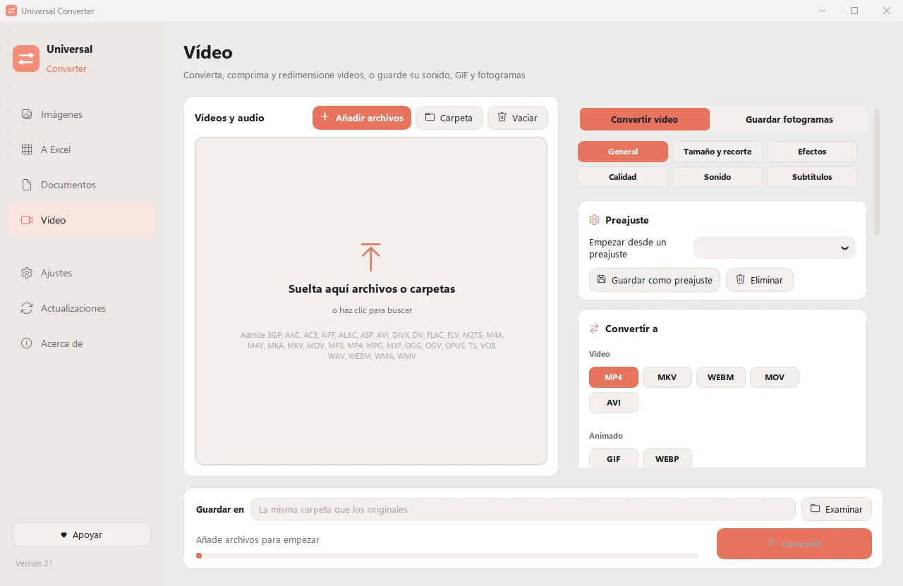

Convertir MKV, MOV, AVI y WMV a MP4
El MP4 se reproduce en móviles, televisores, navegadores y programas de edición. Universal Converter abre MKV, MOV, AVI, WMV, FLV, MPG, TS, WebM y más, y los convierte a MP4 con las pistas de audio y subtítulos que elijas.
Descargar para Windows
Gratis · Windows 10 y 11, 64 bits · Análisis antivirus
Cómo hacerlo
- Abre Universal Converter y elige Vídeo a la izquierda.
- Arrastra tus archivos o una carpeta entera a la ventana, o pulsa Añadir archivos.
- Elige MP4 en Convertir a. Deja el resto como está o elige un ajuste predefinido.
- Pulsa Convertir. Los archivos nuevos se guardan junto a los originales o en la carpeta que elijas.

¿Por qué sin conexión?
Universal Converter hace el trabajo en tu propio ordenador. Tus archivos siguen siendo privados, los archivos grandes no son problema y funciona sin conexión a internet.
Más cosas que puede hacer
- Comprimir un vídeo sin subirlo
- Guardar el sonido de un vídeo en MP3
- Crear un GIF a partir de un vídeo
- Pasar tablas de un PDF a Excel
- Unir fotos en un solo PDF
- Convertir un PDF a Word
- Unir varios archivos en un PDF
- Copiar el texto de una imagen (OCR)
- Convertir WEBP a JPG o PNG
- Cambiar el tamaño de imágenes o reducirlas a un tamaño de archivo